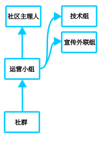

当前服务器信息:
@白色旅人：Nuclear Tech: New Horizons
@456258hf：HFUT Vanilla服务器
我们每月开放两次小游戏，届时邀请其他高校成员一起，很热闹。
合作高校列表：
开办过的小游戏：
| 名称 | 原名 | 链接 | 开始日期 | 峰值人数 | 累计人数 | 跨校 | 备注（长期服仅统计HUT开服情况，牛头冲、空调等等其他群待统计） |
|---|---|---|---|---|---|---|---|
| 背刺 | Backstabbed! | https://www.planetminecraft.com/project/backstabbed/ | 2025/03/07 | 15 | 17 | 峰值人数取自合影 | |
| 吃鸡 | 2025/03/15 | ||||||
| 生化追击 | https://www.bilibili.com/video/BV1q1F6eeEfs | 2025/03/28 | 16 | 20 | 峰值人数取自截图 | ||
| 背刺 | Backstabbed! | https://www.planetminecraft.com/project/backstabbed/ | 2025/04/19 | 9 | 11 | 峰值人数取自合影 | |
| 驱魔传 | https://www.bilibili.com/video/BV1nHLUz4EKF | 2025/05/05 | 10 | 累计上线人数 | |||
| 夢樂園1930 | https://www.bilibili.com/video/BV17pFTe3Ep3 | 2025/05/28 | 6 | 6 | 资源包自定义人物模型参考，抛硬币肉鸽，小游戏考察和筹备 | ||
| 生化追击 | https://www.bilibili.com/video/BV1q1F6eeEfs | 2025/05/30 | 17 | 18 | 是 | 来了地图作者一起参与，峰值人数取自截图 | |
| 起床战争 | 交流研讨[QQ群:675335148] | 2025/06/14 | 10 | 峰值人数(存疑) | |||
| 躲猫猫（改版） | ブロック擬態かくれんぼ | https://minecraft-mcworld.com/70901/ | 2025/08/02 | 34 | 38 | 是 | 地图改版部分未能正常运行，临时开办背刺，累计在线10人 |
| 背刺（改版） | Backstabbed! | https://www.planetminecraft.com/project/backstabbed/ | 2025/08/15 | 18 | 20 | 背刺改版测试，峰值人数取自合影 | |
| 背刺（改版） | Backstabbed! | https://www.planetminecraft.com/project/backstabbed/ | 2025/08/30 | 16 | 18 | 是 | 峰值人数取自合影 |
| 生化追击 | https://www.bilibili.com/video/BV1HjYvzNE6t | 2025/09/27 | 25 | 28 | 是 | 新版，峰值人数取自截图 | |
| Bingo | Yet Another Bingo | https://modrinth.com/modpack/yet-another-bingo-ultimate | 2025/10/07 | 20 | 26 | 是 | 主办：SZU荔方社，峰值人数取自截图 |
| 方块躲猫猫（改版） | 2025/10/19 | 22 | 32 | 是 | SZU提供技术支持，抽奖发放3D打印宣图书馆模型，峰值人数取自截图 | ||
| 短跑赛手/冲刺赛手 | Sprint Racer | https://www.planetminecraft.com/project/sprint-racer-upcoming-realms-minigame/ | 2025/11/01 | 27 | 32 | 是 | 运动会主题，依据排名发放3D打印纪念币，峰值人数取自游戏内 |
| 柱联壁合 | Pillar Pummel | https://www.yeggs.org/java/pillar-pummel | 2025/11/22 | 12 | 17 | 是 | 峰值人数取自截图，统计可能不完整 |
| 你宁愿 | Would You Rather | https://www.planetminecraft.com/project/would-you-rather-4897801/ | 2025/12/06 | 17 | 21 | 是 | 峰值人数取自游戏内 |
| 暴民狼人杀 | 狼人殺.AI 4.0 | https://forum.gamer.com.tw/C.php?bsn=18673&snA=202264 | 2025/12/19 | 27 | 29 | 是 | 峰值人数取自截图 |
| Bingo | Yet Another Bingo | https://modrinth.com/modpack/yet-another-bingo-ultimate | 2026/01/02 | 是 | |||
| 背刺（改版） | Backstabbed! | https://www.planetminecraft.com/project/backstabbed/ | 2026/01/24 | 18 | 19 | 是 | 峰值人数取自截图 |
| 怪物弓箭大作战 | https://www.bilibili.com/video/BV1wZh5eJE1A | 2026/02/07 | 16 | 是 | 峰值人数取自截图，log丢失，累计人数不可考 | ||
| 你建我猜/建筑战争重制版 | Building Game Redux | https://www.planetminecraft.com/project/building-game-redux/ | 2026/03/07 | 30 | 31 | 是 | 峰值人数取自截图 |
| 短跑赛手/冲刺赛手 | Sprint Racer | https://www.planetminecraft.com/project/sprint-racer-upcoming-realms-minigame/ | 2026/03/21 | 19 | 20 | 是 | 峰值人数取自截图，统计可能不全 |
| 海盗炮艇战/狡猾炮手 | Crafty Cannoneers | https://www.minecraftmaps.com/49096-crafty-cannoneers | 2026/04/18 | 21 | 25 | 是 | 峰值人数取自截图 |
| Bingo 1.21.11 | Yet Another Bingo | https://modrinth.com/modpack/yet-another-bingo-ultimate | 2026/05/23 | 24 | 30 | 是 | 峰值人数取自截图 |
| 生化追击 | https://www.bilibili.com/video/BV1HjYvzNE6t | 2026/06/13 | 17 | 22 | 是 | 峰值人数取自截图 | |
| 起床战争 | https://wifi-left.github.io/MC-MiniGames | 2026/06/27 | 17 | 是 | 峰值人数取自截图 | ||
| 小游戏派对 | https://wifi-left.github.io/MC-MiniGames | 2026/07/18 | 32 | 是 | 四校联谊，后有复原服与生存服参观活动 | ||
| 变色龙躲猫猫 | Meccha Crafteleon | https://modrinth.com/mod/meccha-crafteleon | 2026/07/26 | 21 | 27 | 是 | 峰值人数取自截图 |
这是我们社群的长期共建项目
目前已完成翡翠湖校区与宣城校区主要建筑的外形复原，内饰与景观仍待完善，屯溪路校区也尚未启动。
如果你对建筑、规划有兴趣，欢迎关注群内动态，参与第二期校区复原计划。
平台链接：
如果你对社群发展有任何想法，欢迎填写【发展提案】。
🎈所有提案将在社区大会上被认真讨论，你的声音可能成为下一项社区活动或规则的起点！
每半月我们通常会召开一次社区讨论会，对提案进行表决、分配任务并共同决策。每一位成员都有发言权和投票权。
🌰我们的社群，我们做主
如果你对社群充满热情，愿意投入时间与创意，欢迎加入运营小组！我们负责活动策划、宣传、技术维护等工作。
这里虽不是正规社团，没有功利性的回报，但你能收获：
组织与协调能力的锻炼
一群志同道合的朋友
亲手塑造一个社群的成就感
小组架构

我们深知，一个社群真正的财富不仅是眼前的活跃，更是经验的沉淀与技术的传承。
“独学而无友，则孤陋而寡闻。”——《礼记·学记》
为此，我们正着力构建社群共享知识库，旨在让每一位成员的探索与创造，都能成为照亮后来者的阶梯，让智慧在传递中增长，而非在时光中散佚。
ps:作为游客，你只有阅读权限，点击链接加入组织方可编辑
📚知识库：
我们想建立的，不是一个固步自封的小团体，而是面向全体玩家的开放社群。
因此，我们将换届制度作为一个社群永葆生命力的法宝。
固定周期：运营团队每年进行1-2次定期换届，具体时间将在社区大会提前公示。
开放参选：任何积极参与社群活动、认同社群理念的成员，均可报名参选或推荐他人。
民主评议：换届将在社区大会中进行，参选者陈述想法，由成员共同评议与表决。
平稳交接：设置交接期，确保项目、资源和经验得以传承，实现“换人不断事”。